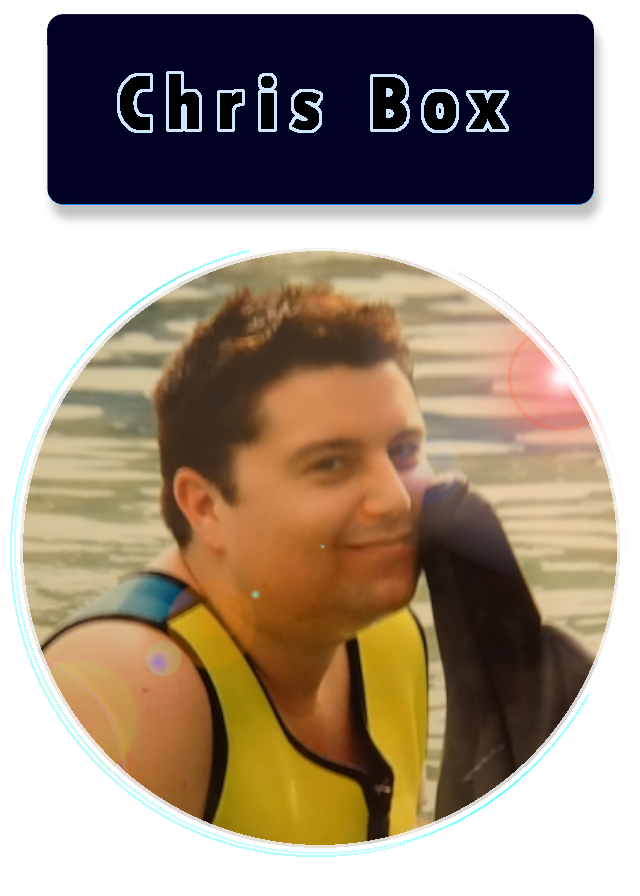
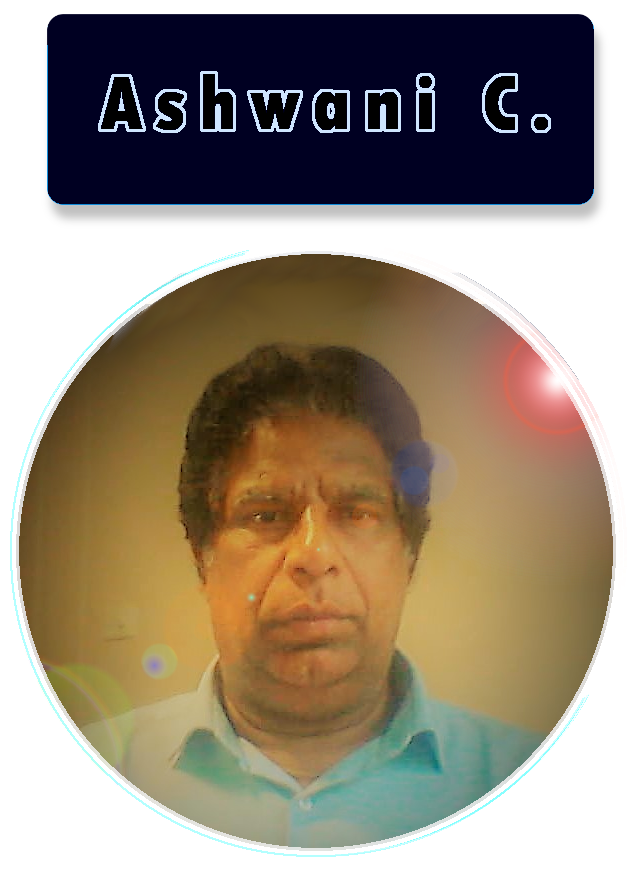
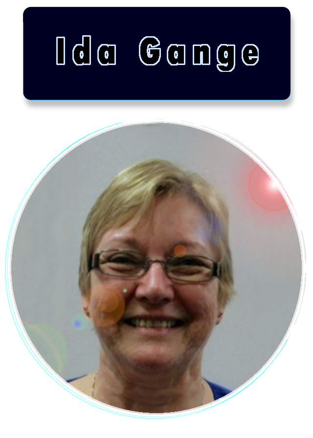
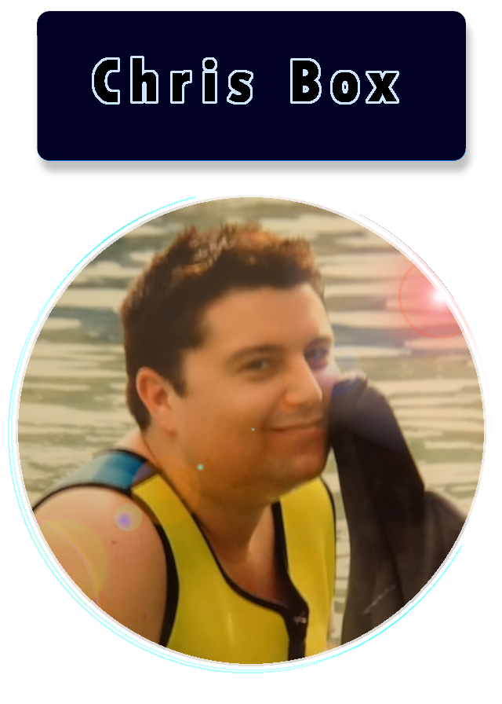
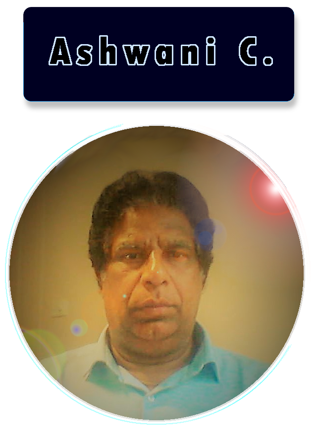
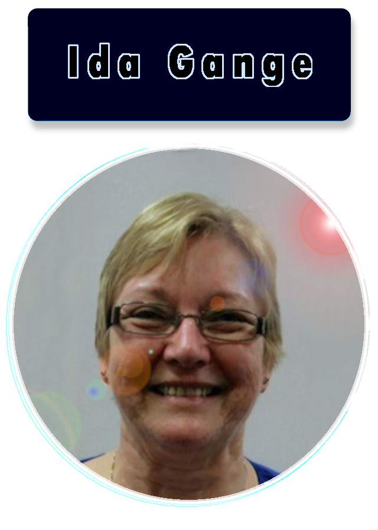

Meet the DualCab team
-

 





Lachlan Neilsen - Team Leader
Personal Information
Student Number: S3987677
My name is Lachlan Neilsen, I am a High Voltage Tester, and I have recently commenced Bachelor of IT with RMIT. I am a slightly introverted, open-minded worker with a primarily hands-on learning style. I got a keen interest in learning IT when one of my friends showed me how to install Linux and play around with Python. Since then I have used python extensively for processing and analysing data and have gained knowledge of core concepts of OOP.Team Profile
I am a slightly introverted, open-minded worker with a primarily hands-on learning style. My greatest strength (as highlighted by Myer-Briggs) is my persistent need for clear, decisive answers. As an INTJ-A personality type, I pay great attention to detail, and as a result I usually complete tasks at a very high standard. My Greatest weakness (as highlighted by Big 5 results) is a relatively low extraversion, coupled with 69% neuroticism. If care is not taken this could lead to insular work patterns, and disproportionate doubt in my work.
Alex Milnes
Personal Information
Student Number: S3987656
My name is Alex, I am 30, I have relocated to Brasilia, Brazil, and I love it. I am a loving husband and Father of twin boys with another set of twins on the way. I am Australian, born and raised in Sydney. I have studied after school; my significant achievement is attaining the Diploma of Security and Risk Management, which created my interest in information technology. I am a native English speaker and can speak Portuguese at an intermediate level; this has helped me professionally and has created many opportunities. I am interested in physical activities and team sports. I like to read about politics and economics, but I mostly enjoy sports, Cricket and Rugby being my favourites.Team Profile
The test results opened my eyes to my attributes, and I was unaware of some traits the test claimed I had. I felt very accomplished with the result such as “humanitarian”, “innovator”, and “caretaker”, which I believe are very authentic. However, I was also taken aback by such claims of being “judging”; until now, I believed I did not display this trait. It would influence my behaviour positively due to claims that I am a “humanitarian” and a “caretaker”. I am a team player and willing to perform any task assigned. I believe I would excel at speaking and writing tasks due to having prior experience with this before, where Git and GitHub skills I found difficulty with, but I am doing extra study to compensate.Christopher Box
Personal Information
Student number is s3992802
My name is Christopher Box, I'm 42 years of age and live in Newcastle, NSW. I work at Telstra, in a team managing outages related to landlines, and the customer faults affected by those outages. My hobbies include gaming, technology/gadgets, travel and astronomy/ astrophotography. My interest in IT began at a young age, when I began gaming on a computer at Dad's work. This developed over the years into also building PCs, networks, and troubleshooting technical issues for friends and family.Team Profile
My Myers-Briggs Test outcome is 'ISTJ-T Logistician', which means practical, fact-minded and reliable. I work best with some structure and leadership, and am reliable in a role that requires me to complete defined tasks to a clear schedule. My learning Style Test outcome 'Visual Learner', which means that I remember what I see over what I hear and that I prefer to read/write rather than listen to information. In my group I would learn best using visuals such as a shared whiteboard - Trello in our case. Team Roles Test outcome 'Completer, Team Player, Expert', which means the top 3 roles in a group that suit me best are: at the end of a task, to polish and scrutinise the work for errors; diplomacy, team cohesion and helping others; being trusted to complete specific tasks working alone.Ashwani Choudhry
My Personal Information
Student Number: S3991119
Ashwani was born in India, migrated to Australia six years ago and is Australian citizen now. Had a degree in Mechanical engineering but could not carry over due to surname issues. Having a lot of experience in using software's related to mechanical engineering such as CAD, CAM, Solidworks and has worked CRMs like salesforce and SAP. My hobbies are Playing cricket, basketball, golf, enjoy long walks and some gardening.Team Profile
My classification in the Myers-Briggs test is 'Assertive Consul'(ESFJ-A) which means that I am thought to be down to earth with a strong focus on what's happening or likely to happen. I will bring a high-level of organizion but also an even temper and a resistant to stress. My Learning styles test shows that I learn best through hands-on experience and that I get a lot of satisfaction building things. My big-5 test shows that I bring concientiousness to my team and that I strive for high achievement.Ida Gange
Personal Information
Student Number: S3338810
My name is Sjoukje Ida Gange usually called Ida. My hobbies include reading, making many craft items including quilts, plushies, clothes, books and bookbinding and I am now teaching myself leather work. I have qualifications in Information Science and Technology and I worked for many years in Information Management, however my work was becoming more and more technology oriented. Since I very much enjoyed this aspect of my work and wanted to learn more, I enrolled in the Bachelor of Information Technology with OUA/RMIT.